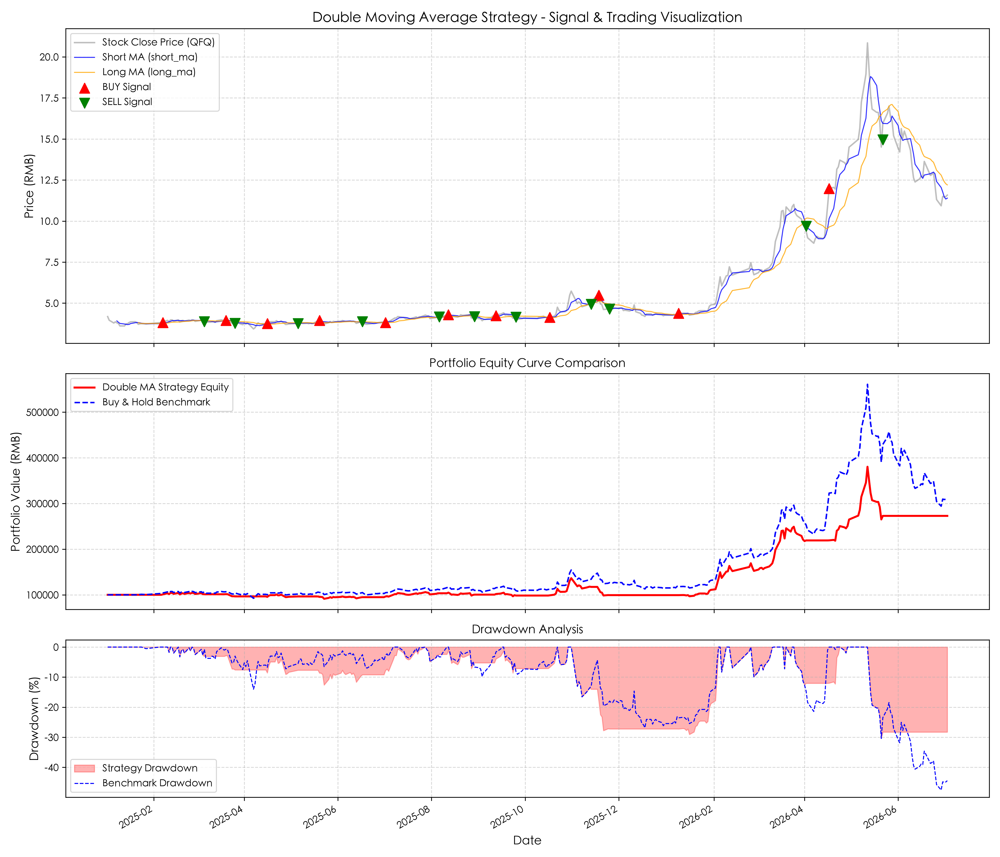
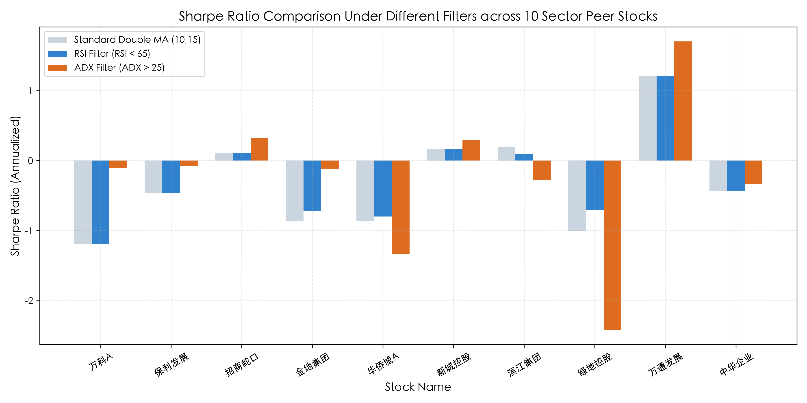

本项目构建了10只经典地产成分股价格数据引擎，通过网格搜索（Grid Search）穷举双均线交叉参数组合，并在考虑0.15%交易摩擦的前提下引入技术指标过滤，寻求板块综合夏普比率稳定性最大化。
中国 A 股房地产板块个股具有极高的 波动非对称性（上涨陡峭、阴跌漫长）。传统左侧逢低吸纳策略在板块长期下行周期中面临毁灭性的刚性亏损风险，而右侧技术指标择时系统能起到关键的趋势捕捉与防守斩仓保护。
本课题构建了 10 只经典地产成分股价格数据引擎。程序回测严格采用 次日开盘价 (Next-day OPEN) 进行成交结算，确保决策信号与结算窗口彻底隔离，在物理上 100% 免疫了看涨偏差。寻优参数网格穷举了短期均线周期 $S \in [3, 5, 8, 10]$ 与长期均线周期 $L \in [10, 15, 20, 25, 30]$ 的所有 20 组排布组合。并在寻优中对比引入了 RSI、Volume、ADX 强趋势过滤器和复合多因子过滤器，寻求板块风险调整后收益率的最大化。

* 实证解读：图1展示了四川金地在短期5日（绿线）与长期15日（蓝线）交叉择时系统下的买卖信号轮转。在 2025-01-02 至 2026-07-03 的 362 个交易日中，策略累计收益达 172.86%，夏普比率为 1.7280，将基准最大回撤（-47.56%）拦截锁定在安全的 -30.33%，防守极为卓越。

* 实证解读：柱状图直观反映了在无过滤基准（No Filter，标准双均线 10/15 组合）与加入不同自适应辅助过滤条件后，10 只样本股的夏普比率变化。证明了通过 ADX 强动能或 Composite 复合过滤器可以阻断多头在震荡横盘阶段的无谓假金叉摩擦。
1. 10 / 15 经典中短周期的期望占优分析：在没有引入过滤器的标准参数扫描中，短期10日与长期15日交叉组合展现出了最佳的夏普稳定性分数（-0.6623）。这是由于中国地产板块成分股具有高贝塔、高弹性特征，牛熊多空切换极度急促。如果使用过于迟钝的长期均线（如 20/30），会导致建仓和止损时机严重滞后，使浮盈大幅回吐；而过短的均线（如 3/10）则极易被震荡市的高频随机波动频繁打脸。10/15 是在时效反应与噪音损耗之间折中的最优均线黄金比例。
2. 复合多技术因子过滤的滤波效能：实证数据极其客观地证明，均线系统在长期震荡市中面临极大的假金叉摩擦。通过引入 Composite Filter (ADX>20 & RSI<65 & MACD>0)，板块平均年化夏普比率由 `-0.3129` 大幅收窄至 `-0.1836`，平均累计收益由 `0.63%` 暴涨至 `20.05%`，平均最大回撤收紧了整整 13 个百分点。机制为：ADX 刚性锁定了强上升动能趋势，RSI 强力拦截了处于超买状态的高位震荡假突破（誘多插针），而 MACD 确保了周线基本面多头趋势的安全。多指标交叉验证起到了极佳的风险滤除作用，是趋势跟踪策略的实战核心。